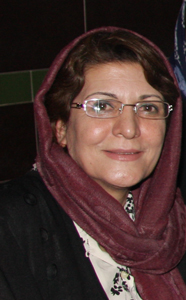

پذيرش > تریبون > مقالات > قوانین ایران از خشونت علیه زنان حمایت می کند


 قوانین ایران از خشونت علیه زنان حمایت می کند قوانین ایران از خشونت علیه زنان حمایت می کند
12 آذر 1388 - خدیجه مقدم - نسخه قابل چاپ
تمامی شواهد نشان گر آن است که خشونت علیه زنان امری جهانی است. در اغلب کشورها بنا بر آمار ارائه شده زنان مورد خشونت قرار می گیرند، اما این خشونت بنا بر سبک زندگی و شرایط زندگی مردم در آن کشور متفاوت است.
1. در جهانی که امروز علی رغم دستاوردهای زیاد زنان، هنوز مشخصه های مردسالارانه ی زیادی در خود دارد خشونت علیه زنان به امری روزانه بدل شده است، این خشونتها که می تواند جسمی، جنسی یا روانی باشند، اشکارا یا پنهان بر زنان اعمال می شوند و اما تفاوت عمده کشورهای در حال توسعه با کشورهای توسعه یافته در این موضوع بسیار مهم است که در کشورهای کم توسعه قانون نیز از اعمال این خشونت ها حمایت می کند
اگر کشورمان ایران را یکی از کشورهای در حال توسعه در نظر بگیریم، باید در نظر داشته باشیم که اگرچه تعدادی از زنان در محیط های شهری، به ویژه در کلان شهرها در سال های اخیر با ، بالاتررفتن سطح سواد و تحصیلات دانشگاهی و آگاهی از حق و حقوق انسانی خود و به دست آوردن استقلال مالی ، توانسته اند فراتر از قانون عمل کنند یا قانون را دور بزنند و با ارتقاء فرهنگ خود ، خانواده و شریک زندگی شان ، به بخشی از حق و حقوق خود برسند ولی همین بخش کوچک از زنان هم همواره دل نگران از دست دادن حقوق خود در مواجهه با قانون هستند .
اما باید در نظر داشته باشیم که این گروه از دختران و زنان ایرانی استثنائی از قاعده معمول هستند ، بیشتر زنان کشورمان ، ضمن اینکه وابستگی اقتصادی شدیدی به مردان دارند در گیر آداب و رسوم سنتی نیزهستند و همین موضوع باعث می شود که مانند مادران و مادر بزرگ های خود مستعد این باشند که مورد انواع خشونت های مختلف قرار بگیرند و طبق همان آدام و رسوم و برای حفظ آبرو، این خشونت ها را پنهان هم بکنند.
قانون نامناسب از عوامل مهم در تداوم خشونت علیه زنان است، در ادامه با بررسی کوتاهی بر قانون ایران، مواردی را بر می شماریم که این قانون به نوعی خشونت را حمایت می کند یا از کنار آن می گذرد.
- خشونت جسمی
رایج ترین نوع خشونت جسمی که گاه به دلیل تکثر ساده نگریسته می شود کتک زدن دختربچه ها، پسربچه و زنان توسط پدر، برادریا برادران بزرگتر صورت می گیرد. حتی در مواقعی از سوی فرزند یا فرزندان ذکور هم مادر مورد آزاد جسمی قرار می گیرد و به خاطرموانع فرهنگی و اجتماعی، کمتربازگو می کند.
قانون مدنی ایران در این مورد چه می گوید ؟
طبق ماده 1130 قانون مدنی ایران " در صورتی که دوام زوجیت موجب عسر و حرج ( در مشقت و سختی قرار گرفتن ) زوجه باشد ، وی می تواند به حاکم شرع مراجعه و تقاضای طلاق کند. چنانچه عسر و حرج در دادگاه ثابت شود دادگاه می تواند زوج را اجبار به طلاق نماید و در صورتی اجبار میسر نباشد زوجه به دستور حاکم شرع طلاق داده می شود". این در حالی است که شرایط عسر و حرج مشخص نشده وبسته به نظر قاضی است. اثبات عسر و حرج اگر نگوییم غیر ممکن ولی به ندرت قابل اثبات است. زنان به ندرت می توانند قاضی را قانع کنند که در شرایط دشواری زندگی می کنند واغلب قضات همین که شوهر نقفه زن را پرداخت کند از بقیه موارد می گذرند.و چنین استدلال می کنند که مرد بیرون از خانه کار می کند، خسته است و باید در خانه آرامش داشته باشد و زن نباید کاری کند که مرد او را کتک بزند. حتی بسیار دیده شده است ، وقتی زن اعتیاد همسرش را در دادگاه مطرح می کند و اعلام می کند که اعتیاد همسرش موجب بروز انواع خشونت ها در خانه و اجتماع شده و تقاضای طلاق می کند بازهم با نقض قانون مواجه می شود. گاه قاضی به صرف اینکه وقتی شوهرمخارج خانه را به عنوان سرپرست خانواده تقبل می کند حق دارد که بخشی از درآمدش را برای خودش نیز صرف کند، بی توجه به عمق فاجعه با طلاق موافقت نمی کند .( نمونه های بسیاری در دست است.) این در حالی است که طبق ماده 1133 قانون مدنی " مرد می تواند هروقت که بخواهدزن خود را طلاق دهد".
خشونت جنسی
حشونت جنسی از لمس کردن تا تجاوز را در بر می گیرد. این خشونت می تواند در حریم خانه اتفاق بیافتد و یا در اجتماع .
وقتی طبق قانون زن باید در هر شرایطی به شوهر تمکین کند و مرد می تواند به خاطرعدم تمکین زن او را طلاق دهد بدین معناست که قانون صراحتن از خشونت جنسی خانگی حمایت می کند .
در سال های اخیر به کرات از کانال های غیر رسمی درباره تجاوز پدر و برادر به دختر و خواهر شنیده ایم. متاسفانه به دلیل سرپوش گذاشتن براین فجایع هم از سوی خانواده ها و هم از سوی دولت، آمار و اطلاعات رسمی در دست نیست، ولی نشانه های خشونت های اعمال شده بر زنان و کودکان گاه سراز اخبار و رسانه ها در می آورد .
طبق اطلاعات به دست آمده از روزنامه های رسمی ایران، در زندان های جمهوری اسلامی ایران انواع خشونت ها در پناه قانون اعمال می شود خشونت روانی از بدو ورود تا آزادی، خشونت جسمی به صورت آزارو شکنجه و خشونت جنسی هم وجود دارد ومتاسفانه ، مسئولان تا کنون هیچ ماموری را برای انجام چنین جرایمی محاکمه علنی نکرده اند. حال انکه با استناد به قوانین برای گروه گروه جوانان بیگناه در زندان ها احکام سنگین صادر شده است ، آیا نمی توان این سکوت بی توجهی را نوعی حمایت از خشونت های جسمی و جنسی و روانی قلمداد کرد؟
اتفاقاتی که طی سی سال گذشته شاهد آن بوده ایم، از اعدام ها در سال های مختلف به خصوص 1367 تا قتل های زنجیره ای تا خودکشی هایی در زندان ، تا مرگ های مشکوک ، ... و بلاخره سکوت به جای رسیدگی و تحقیق در مورد این فجایع به معنای حمایت آشکار از خشونت نیست ؟
- خشونت روانی
وقتی کرامت انسانی زن چه در خانه و چه در اجتماع رعایت نشود منجر به خشونت روانی می شود . وقتی قانون تعدد زوجات به تصویب می رسد و قانون طلاق هم تغییری نمی کند زن با تهدید و ناامنی در زندگی مشترک رو به رو هست.
وقتی با استفاده از قانون به اجبار حجاب از سر زن بر می دارند و به اجباربر سر زن می کنند از ابزار قانون برای خشونت روانی علیه زنان استفاده نمی شود.
وقتی زن و مرد به طور مشترک زندگی را پیش می برند ولی مرد طبق قانون رئیس و سرپرست خانواده است، خشونت روانی به زن اعمال نمی شود ؟
تمام قوانین تبعیض آمیز علیه زنان که در دفترچه کمپین یک میلیون امضا به زبان ساده نوشته شده است از حق ازدواج – حق طلاق – حق ولایت و سرپرستی فرزندان – حق ارث – تعدد زوجات –حق تابعیت – حق شهادت - حق سفر – حق اشتغال – حق انتخاب مسکن و قوانینی که از قتل های ناموسی حمایت می کند همه و همه موجبات اعمال خشونت های جسمی، جنسی و روانی بر زنان را فراهم می کند.
افزون بر این تبعیض ها هنگامی که قوانین تبعیض آمیز در هر گوشه از این کشور پهناور با آداب و رسوم سنتی قومیت های مختلف در هم می آمیزد خشونت علیه زنان را دو چندان می کند، وقتی با فقراکثریت زنان در هم می آمیزد زندگی زنان را به واقع به بن بست می کشاند وخشونت علیه زنان بازتولید می شود وخود سوزی و همسرکشی و بچه کشی ها آغاز می گردد.
نتیجه آنکه قوانین مدنی ما از خشونت علیه زنان حمایت می کند، برای کاهش خشونت علیه زنان باید قوانین را با توجه به نیازهای جامعه تغییر داد. هرچند دور چنین تغییری از سوی قانونگذاران دور به نظر می رسد اما به همت زنان تغییر خواهد کرد
ارسال به
بالاترین
،
توییتر
،
فریندفید
،
فیسبوک
در همين بخش :
 دهمین دورۀ مراسم تندیس صدیقه دولت آبادی ۱۳۹۲ دهمین دورۀ مراسم تندیس صدیقه دولت آبادی ۱۳۹۲
کارت پستالهایی به بهانهی هشت مارس و به یاد همهی مبارزین راه برابری
بیانیه بیش از 350 تن از مدافعان حقوق زنان به مناسبت روز جهانی زن؛ زنان هر روز فرودستتر میشوند
لباسی که برای تن ما دوخته اند! /اعظم بهرامی
چالشها و چشمانداز فعالیت مدنی زنان
ديگر بخش ها :
طرح یک میلیون امضا
|
مقالات
|
سایت نوشته ها
|
اخبار
|
گزارش كمپين
|
گفت و گو
|
علیه سکوت
|
كوچه به كوچه
|
نامه های شما
|
گزارش ویژه
|
گفتگو با اعضا
|
ویژه سالگرد کمپین
|
تصویر برابری
|
دل آرام علی
|
تریبون
|
مقالات
|
تاریخ شفاهی
|
خارج از چارچوب
|
کتابخانه
|
درباره کمپین
|
کمپین در شهرها
|
کمپین در بند
|
صدای تغییر
|
ویژه 22 خرداد
|
لایحه حمایت از خانواده
|
گالری
|
عشا مومنی
|
امیر یعقوبعلی
|
خدیجه مقدم
|
راحله عسگری زاده و نسیم خسروی
|
پروین اردلان،جلوه جواهری، مریم حسین خواه، ناهید کشاورز
|
زینب پیغمبرزاده
|
سعیده امین، سارا ایمانیان، محبوبه حسین زاده، ناهید کشاورز و همایون نامی
|
احترام شادفر
|
نسیم سرابندی زاده،فاطمه دهدشتی
|
وبلاگ مهمان
|
پرونده خرم آباد
|
دستگیری ها
|
مریم مالک
|
پرستو اللهیاری
|
مهرنوش اعتمادی
|
سمیه رشیدی
|
Other Languages
|
همراهان
|
«فراخوان کمپین ده روز با بهاره هدایت»
| English
|